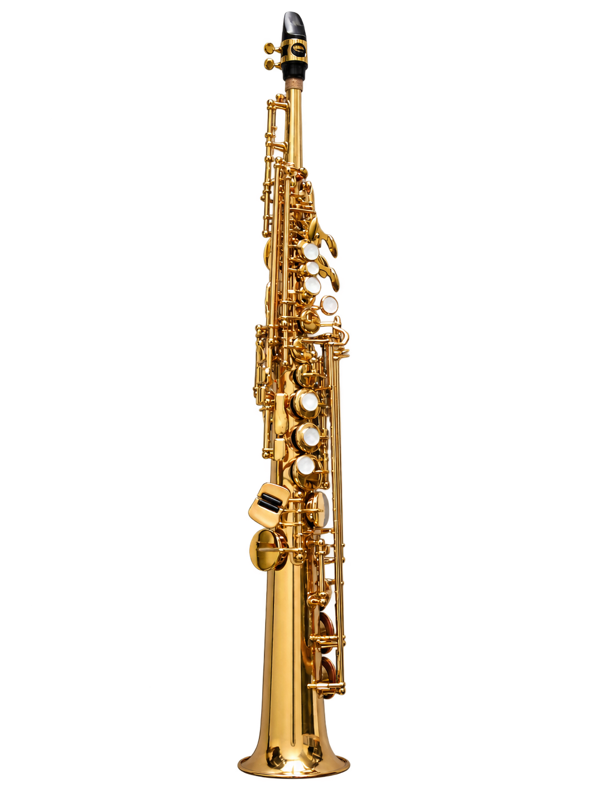
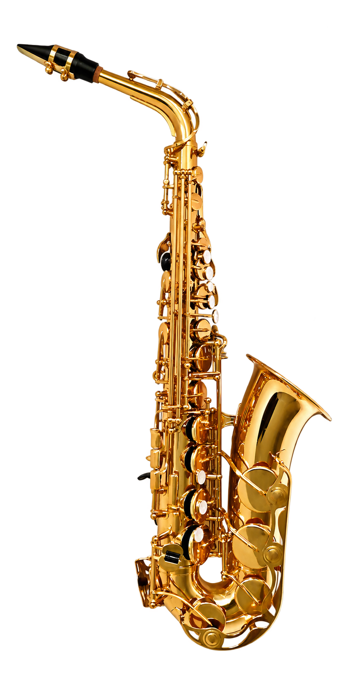
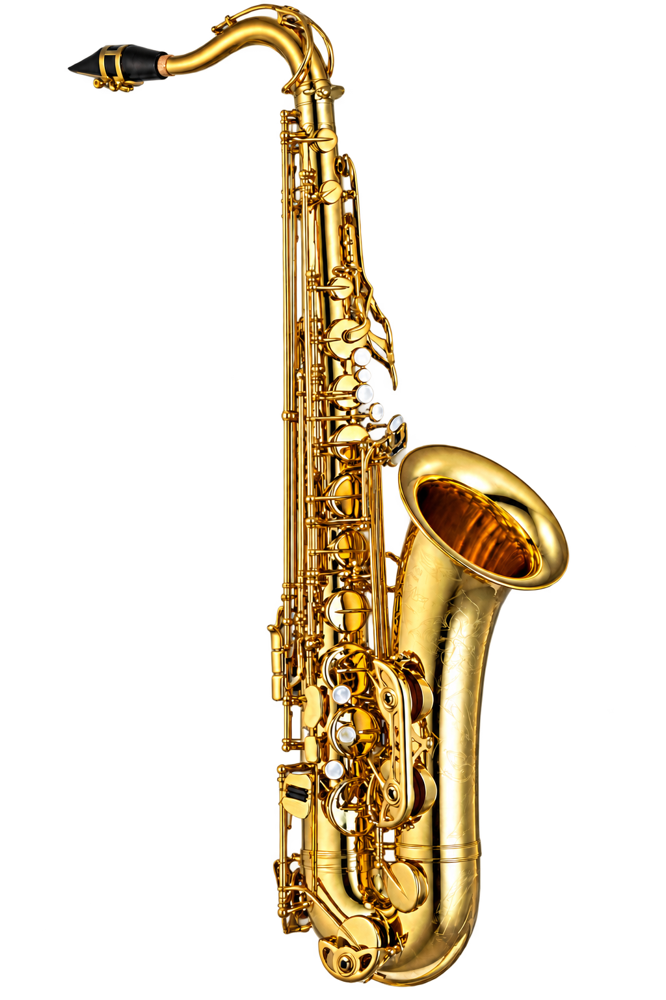
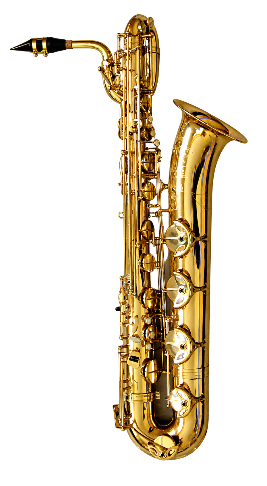

B♭ / SOPRANO
Light & lyrical.
A clear, singing voice above the rest of the quartet. Commonly straight, although curved models also exist.
ONE FAMILY. MANY VOICES.
The saxophone is a woodwind with a brass body and a single reed. Its family stretches from brilliant, delicate highs to remarkably deep lows.

A clear, singing voice above the rest of the quartet. Commonly straight, although curved models also exist.

A familiar voice in jazz, classical music, and school ensembles. Smaller and higher pitched than the tenor.
Play the alto
A broad, resonant voice with a curved neck. Its written notes sound an octave lower than the soprano’s.

The low voice of the quartet, with a distinctive loop in its upper tubing. An octave below the alto.
BEYOND THE QUARTET
The family reaches even further. These unusual voices occupy the highest and lowest registers.
The studio currently focuses on the alto. The whole family stays here to explore, from the tiny sopranissimo to the towering subcontrabass.
YOUR OWN LITTLE STUDIO
Drag the instrument to look around it. Scroll or pinch to zoom, and use the circular arrow at the top to reset your view. Click a key to play a short note. Choose Notes to reveal the playable keys, Listen to hear a short original phrase, or Rotate to watch the instrument turn. The key markers glow as they sound.
Open the small piano button at the top for a chromatic keyboard, octave controls, and volume. Hold its keys with your mouse or touch, or use A W S E D F T G Y H U J K while the piano is open. Escape stops all notes and closes the piano.
The keyboard and model show written pitch; the small note indicator also names the concert pitch you hear. Each highlighted model key plays one note directly. This simplified mapping is for exploration, not real saxophone fingering instruction.
The 3D model is the Smithsonian’s scan of Charlie Parker’s King Super 20 alto saxophone, made around 1947. Its brass body, sterling silver bell, engraved details, and mother-of-pearl keys are captured from the real instrument. The studio sound comes from FluidR3 GM alto samples, not a recording of Parker’s saxophone. Samples have a finite length.
Keyboard navigation: focus the 3D viewer and use the arrow keys to orbit, + / − to zoom, and Home to reset. The piano provides an accessible alternative to clicking the model.